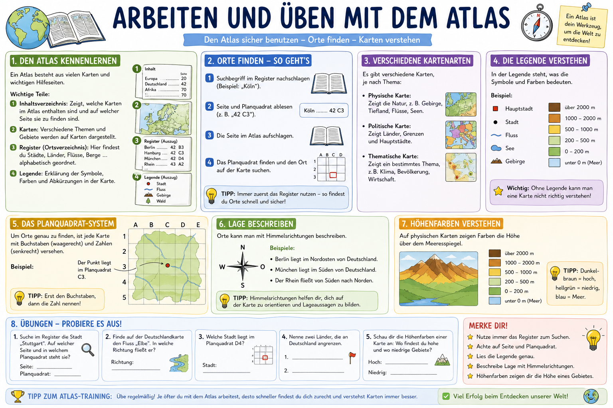

In diesem Modul trainierst du, wie du mit deinem Westermann Atlas schnell und sicher arbeitest:
Register nutzen, Planquadrate lesen, Kartenarten unterscheiden, Legenden verstehen und Lage beschreiben.
Das Modul passt zum Kompetenzbereich Orientierung im Raum: Du entnimmst Karten Informationen,
beschreibst Raeume fachlich korrekt und nutzt den Atlas als Arbeitswerkzeug.
Register und Inhaltsverzeichnis zielgerichtet einsetzen.
Seite, Planquadrat und Lagebeziehungen sicher anwenden.
Kartenarten und Legenden fachlich korrekt auswerten.
Ergebnisse in ganzen Atlas-Saetzen dokumentieren.
Uebersichtsgrafik
Die Grafik zeigt den kompletten Werkzeugkasten fuer die Atlasarbeit.
Darunter trainierst du alle Schritte interaktiv.

Vom Register bis zur Legende: so arbeitest du strukturiert mit dem Atlas.
Atlas-Kompass: Die 4-Schritte-Methode
Interaktiv: Register-Simulator
Uebe den ersten Atlas-Schritt: Du siehst einen Suchbegriff und waehlst den passenden
Register-Eintrag aus (Stadt + Seite + Planquadrat).
Aufgabe wird geladen...
Interaktiv: Kartenarten und Legende
Wird hier eher eine physische, politische oder thematische Karte gebraucht?
Aufgabe wird geladen...
Westermann-Atlas Missionen (frei ueben)
Diese Aufgaben loest du direkt in deinem Atlas. Die Loesung kann je nach Ausgabe auf
anderen Seiten stehen, deshalb arbeitest du mit Kriterien statt festen Seitenzahlen.
Suche eine Stadt in Niedersachsen und notiere Seite + Planquadrat + Nachbarfluss.
Finde eine physische Karte von Deutschland und beschreibe zwei hohe und zwei niedrige Gebiete.
Finde eine thematische Karte (z. B. Klima/Bevoelkerung) und erklaere die Legende in 3 Saetzen.
Selbstcheck: Hast du Register genutzt, Planquadrat genannt, Legende ausgewertet und einen
vollstaendigen Lagesatz geschrieben?
Training A: Atlas-Werkzeugwissen
Aufgabe wird geladen...
Training B: Planquadrat lesen
Aufgabe wird geladen...
Training C: Lage beschreiben
Aufgabe wird geladen...
Abschlusstest
10 Fragen aus einem eigenen Pruefungspool: Register, Planquadrat, Kartenart, Legende und Lage.